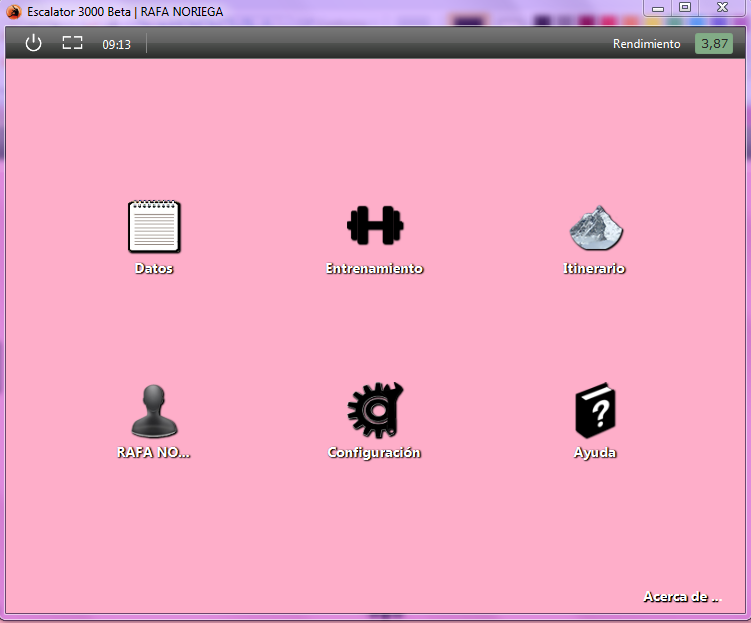

Pantalla principal
Esta es la pantalla principal. Se muestra nada mas acceder con un usuario determinado.

Esta es la pantalla que dara la funcionalidad al programa.
Si se elige la opcion -Datos- mostrara datos sobre los entrenamientos e itinerarios del usuario.
La opcion -Entrenamiento- permite dar de alta un entrenamiento.
Eligiendo la opcion -Itinerario- podemos dar de alta un itinerario nuevo.
Seleccionando el icono de -Perfil de usuario- podremos ver las estadisticas y datos del usuario.
La opcion -Configuracion- permite configurar diversos parametros del programa y del usuario.
El icono de -Ayuda- muestra una breve explicacion de como funciona el programa.